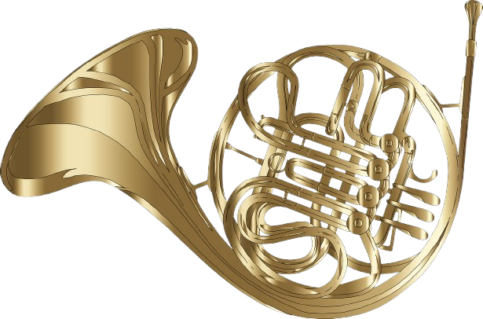

The French horn is a brass instrument known for its distinctive circular shape and rich, mellow tone. It's a staple in orchestras, known for its versatility in both orchestral and solo settings. Circular shape and tubing: French horns consist of a long, narrow tube (around 12 feet in a single horn) wound into a circular shape. Mouthpiece: Players "buzz" their lips into a cup or funnel-shaped mouthpiece, creating vibrations that travel through the horn. Rotary valves: Rotary valves, operated by the left hand, redirect air into different lengths of tubing (valve slides) to change the pitch. Bell: The flared bell amplifies and shapes the sound, and the player can adjust the tone by placing their right hand inside the bell. Single French horn: The basic type, often used by beginners, typically pitched in F or B♭. Double French horn: Combines an F horn and a higher-pitched B♭ horn, accessed by a fourth valve (thumb trigger), offering a broader range and greater accuracy in the higher register. The double horn in F/B♭ is the most common for professional players. Compensating double horn: Lighter than a full double horn, with full-length slides for the B♭ side and shorter slides that can be added for playing in F. Triple horn: Adds a descant horn (usually in high F) to a double horn, providing further assistance in the high range. Natural horn: The ancestor of the modern horn, valveless, with pitch controlled.
